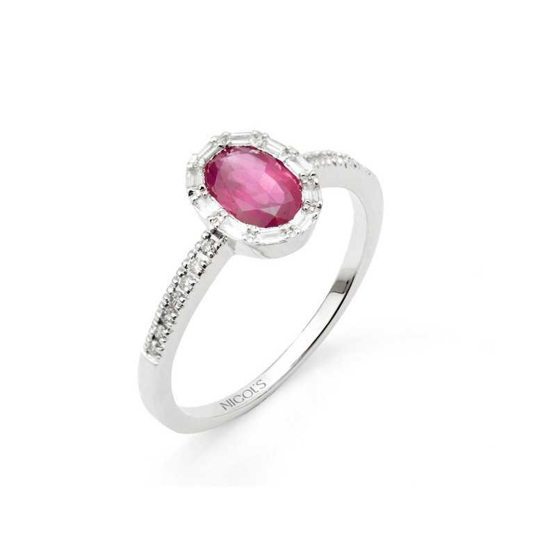

Anell de Rubí
Anell amb oval de rubí amb engast invisible amb orla de baguettes de diamant i almenes de diamants en talla brillant al braç. Fabricada en or blanc i diamants talla brillant.
A Joyeria Vera, ens enorgulleix oferir joies d'alta qualitat amb dissenys únics, i aquest anell de rubí no és una excepció. Ordeneu el vostre avui i feu una declaració elegant i intemporal!
Preu: 2.300,00 €